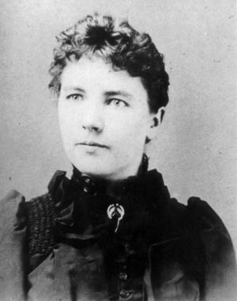

|
There’s a question a lot of women ask late at night.
“What was it all for?”
All those years of loving a man through the hard times. Of raising children on not much. Of putting everyone else first.
I’ve been thinking about a woman who wrote her whole life down at 63, and heard “no.”
Let me tell you about her.
Her name was Laura Ingalls Wilder. You might know her from Little House on the Prairie.

Laura, around 1885.
Photo: unknown photographer (public domain)
At 18, she married a farmer named Almanzo Wilder.
Then came the hard years. Hail, sickness, a baby son lost, a house burned down.
In 1929, the stock market crashed. They lost most of their life savings. Laura was 62.
Here’s where things get interesting.
The money was gone. What she still had was everything she remembered.
So at 63, she wrote it all down by hand, on cheap school tablets. She called it Pioneer Girl.
Publishers said no. Again and again. Tell it as a story instead, they said.
So, with her daughter Rose’s help, she made the start of it a children’s book.
Now, here’s the part that made me smile.
An editor at Knopf finally wanted it. Then, before Laura could sign, Knopf closed its children’s book department.
(Of course it did.)
Another publisher, Harper, said yes.
In 1932, Little House in the Big Woods came out. Laura was 65.
Here’s her first line:
“Once upon a time, sixty years ago, a little girl lived in the Big Woods of Wisconsin, in a little gray house made of logs.”
She had to live all sixty of those years to write that line.
And her last, as little Laura listens to Pa’s fiddle:
“They could not be forgotten, she thought, because now is now. It can never be a long time ago.”
The crash took her savings. It couldn’t take what she’d lived.
Her hard years weren’t wasted. They were what she had to give.
Yours might be too.
I’ll be honest with you.
I can’t tell you your years will turn into a book. Most don’t. And I can’t hand you back what you lost.
I won’t pretend every hard year was a gift, either. Some were just hard.
But I don’t think a hard life is an empty one. A lot of what you carry from those years, nobody else has. And it’s hard to see that from the inside.
That’s what I can do. I can look at it with you, from a little further back.
So ask me the question you keep asking. About love. About the people you gave those years to. About what’s next, now that the house is quieter.
You don’t need to tell it well. Her first try got turned down too.
Evelyn, I’d like to ask you about my own hard years →
When you’ve spent your life on other people, it’s easy to think nothing’s left for you.
A lot of us only count the losses. The money. The people. The years.
That makes sense. Careful women keep count.
It just leaves out the part only you were there for.
New here? Your first 3 minutes are on me.
Laura was 63 when she filled those tablets. Tonight’s a good night to start yours.
Ask Evelyn what my years were for →
— Evelyn
P.S. She wrote Pioneer Girl on the cheap tablets kids used for school. Nothing fancy. You don’t need anything fancy either. Just your question. Start here.
|